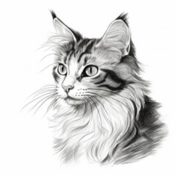

Meet the heart and soul behind [Your Organization Name].
Our team of four is driven by a shared love for animals and a deep commitment
to making a positive impact. From [Team Member 1] to [Team Member 4], each one
of us brings a unique set of skills and a compassionate spirit to our cause.
Welcome to Pawsome Adoptions, where passion

Our mission is simple yet profound: to provide
We've witnessed the heartbreaking stories of,
Join us in our mission! Whether you choose to